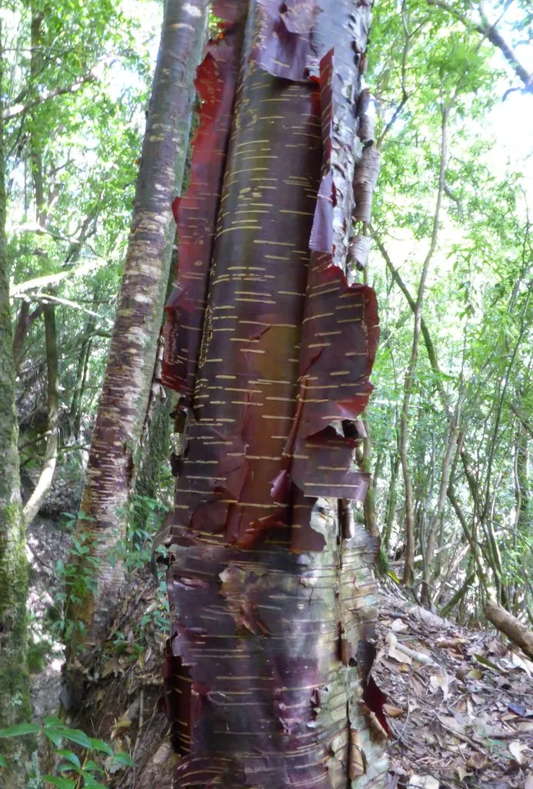

乔木 · 植物界
红桦 Betula albosinensis

桦木科落叶乔木，树皮橘红色、薄如纸片可层层剥落，生于中国中西部高山，是森林演替的先锋树种。
- 分类
- 门被子植物门纲木兰纲目壳斗目科桦木科属桦木属
- 栖息环境
- 海拔 1500–3400 米的山地阴坡、沟谷与林缘，喜光耐寒耐瘠薄
- 地理分布
- 中国河北、山西、陕西、甘肃、青海、四川、云南、西藏等地
- 保护级别
- 暂无评估；中国未列入国家重点保护野生植物名录
物种志
红桦为桦木科桦木属落叶乔木，高 20–25 米，树皮橘红色至红褐色，有光泽，呈薄纸状层层剥落，内层树皮常呈粉白色。叶片互生，卵形至卵状长圆形，边缘具重锯齿，侧脉 8–14 对，背面沿脉被白色长柔毛。花单性，雌雄同株，葇荑花序下垂；果序圆柱形，直立或斜展，小坚果具宽翅，果期 9–10 月。
红桦原产中国，分布于河北、山西、陕西、甘肃、青海、四川、云南、西藏等地，生于海拔 1500–3400 米的山地林中，常与云杉、冷杉、落叶松混生，也成片形成红桦林。它喜光、耐寒、耐瘠薄，是高山森林采伐或火烧后最早侵入的先锋树种之一，为其他树种的恢复创造条件。木材纹理直、结构细，可制家具与工具；树皮轻薄柔韧，可制工艺品、桦皮器皿，过去也用于书写。秋季红棕色的树干与金黄叶色相衬，是高山秋景的代表。
形态与习性
- 株高20–25 m，树皮橘红色、纸状剥落
- 花期4–5 月，葇荑花序下垂
- 果期9–10 月，果序圆柱形
- 光照喜光，为高山先锋树种
- 水分喜湿润，耐寒
- 土壤耐瘠薄，适应山地棕壤
- 主要用途木材制家具，树皮制工艺品与器皿
趣味知识
- 红桦的树皮呈薄纸状，可以一层层撕下，干燥后仍保持柔韧。
- 红桦是高山森林遭到破坏后最先长出的先锋树种之一。
- 树皮含桦木醇等成分，使红桦在林火后仍能较快恢复。
- 秋季红桦的橘红色树干与黄叶相衬，是中国西部高山秋景的代表。